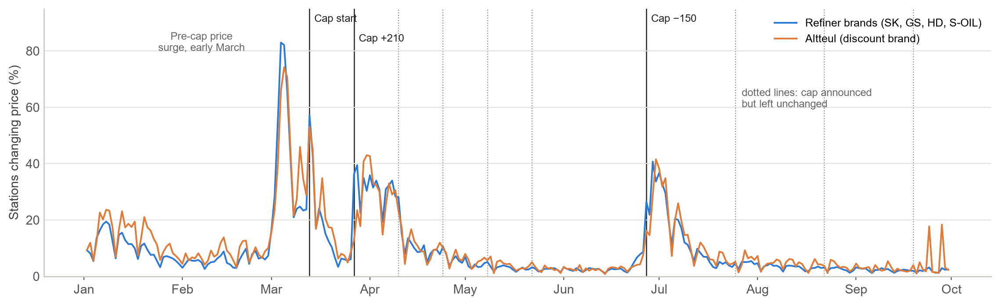
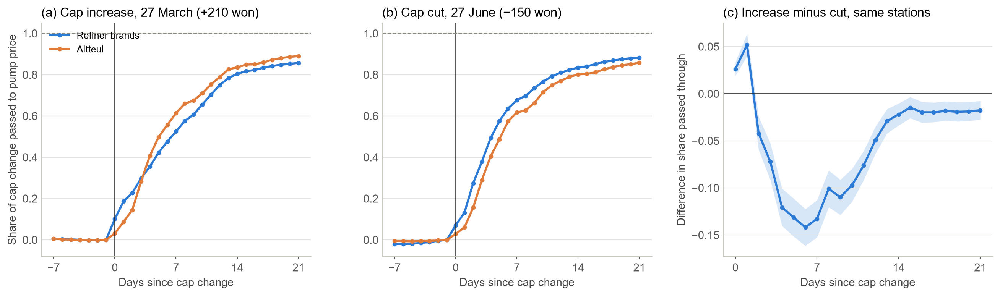
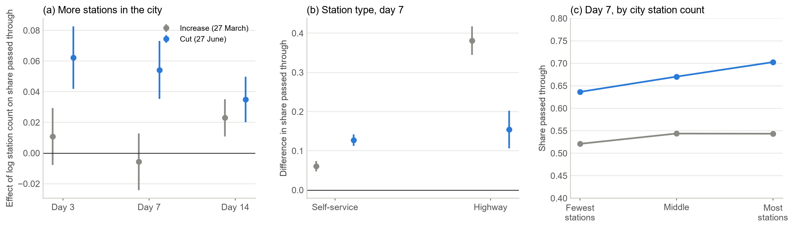

Two Weeks to the Pump
How Korea’s 2026 cap on refiners’ supply prices reached retail fuel prices, where it reached them faster, and who absorbed the gap between the cap and cost
한국어판 — 기름값 상한, 주유소까지 2주 걸렸다
Retail prices are the daily prices of 10,744 Korean gas stations of the four refiners’ brands and the Altteul discount brand, 29 December 2024 to 30 September 2026, published by Opinet, the price portal of the Korea National Oil Corporation. Refiners’ weekly supply prices also come from Opinet, international product prices are Singapore spot quotes, exchange rates come from the Bank of Korea’s ECOS, and regional shipments from the Korea National Oil Corporation’s Petronet. Station locations come from geocoding addresses with the VWorld geocoder. Hypotheses and methods were written down and frozen before the relevant results were examined.
A cap on the wholesale price, changed on announced dates
When international fuel prices spiked during the 2026 Middle East war, the Korean government put a maximum price on what refiners charge gas stations, starting 13 March 2026. The first cap was 1,724 won per liter for gasoline and 1,713 won for diesel. It rose by 210 won on 27 March, the same day the fuel-tax cut widened from 7 to 15 percent for gasoline and from 10 to 25 percent for diesel. The cap was then frozen four times, cut by 150 won on 27 June, and frozen three more times; from the sixth decision the review interval lengthened from two to four weeks.
Two features make the episode informative. The cap sits on the wholesale price, not on what drivers pay. And each change is announced with its date and size, so for a station it is a cost shock of known timing and magnitude. Pass-through of temporary fuel-tax cuts has been studied extensively for Germany and other European countries in 2022, and Hungary’s 2021–22 retail cap has been analysed, but I have not found station-level daily evidence on a repeatedly revised cap on refiners’ prices. This note asks four questions: how fast cap changes reach pump prices and whether speed differs with the number of nearby stations; whether increases and cuts travel at the same speed; whether neighbouring stations of the same brand time their changes together; and where the cap sat relative to cost, and who absorbed the gap.
Headline figures
| Item | Value |
|---|---|
| Stations, daily | 10,744, 29 Dec 2024 – 30 Sep 2026 |
| Stations changing price on 13 March (refiner brands) | 54–63% |
| Largest rise in that share on the seven no-change dates | 3.6 points |
| Share passed through after 1 / 2 / 3 weeks, 27 March increase | 0.54 / 0.81 / 0.86 |
| Share passed through after 1 / 2 / 3 weeks, 27 June cut | 0.67 / 0.83 / 0.88 |
| Increase minus cut after 1 week, same 9,933 stations | −0.133 (0.010) |
| Coefficient on log stations in the city, cut, day 7 | 0.054 (0.010) |
| Cap minus estimated uncapped supply price, gasoline / diesel | −4 to −208 / −4 to −1,042 won by week |
| Station margin on gasoline, 2025 / cap period | 71 / 77–87 won per liter |
1. Data and measures
Station prices are Opinet’s historical daily prices for regular gasoline and automotive diesel. The sample covers stations of SK Energy, GS Caltex, HD Hyundai Oilbank and S-OIL and the Altteul discount brand, including its highway and agricultural-cooperative variants; private-label stations are dropped. Each station’s city (si-gun) is fixed at its modal label before 1 July 2026, when the merger of Gwangju and South Jeolla and a reorganisation of Incheon’s districts changed the labels. A price that moves by 300 won or more and returns the next day is treated as a recording error (147 gasoline and 238 diesel observations).
The cumulative pass-through of station \(i\), \(r\) days after a cap change on day \(\tau\), is
\[PT_{i,r}=\frac{p_{i,\tau+r}-p_{i,\tau-1}}{\Delta c},\]
with \(\Delta c=210\) for the March increase and \(-150\) for the June cut. The 13 March start is used only for timing, because weekly supply prices cannot measure the size of a change introduced mid-week. Each event sample keeps stations observed on at least 80 percent of days from a week before to three weeks after, observed the day before, and not changing brand. Market structure enters as
\[PT_{i,r}=\beta_1\log N_{m(i)}+\beta_2\,\text{Self}_i+\beta_3\,\text{Highway}_i+\alpha_{b(i),s(i)}+u_i,\]
where \(N_m\) is the number of stations in city \(m\) in February 2026 and \(\alpha_{b,s}\) is a brand-by-province effect, with standard errors clustered by city. The seven dates on which the cap was announced but left unchanged serve as placebos.
2. Stations moved on the day the cap changed
On a normal day in 2026, 3–6 percent of stations changed their price. On 13 March, when the cap took effect, 54–63 percent of refiner-brand stations and 89 percent of Altteul stations did. About 40 percent changed on the day after the March increase and on the Monday after the Saturday cut in June. On the seven no-change dates the share rose by at most 3.6 percentage points. The busiest day of the year was earlier, in early March (83 percent of refiner-brand stations), during the surge in international prices before the cap; the spikes at each cap change are separate from it.

3. About 80 percent in two weeks
The first price change came quickly, with a median of zero to two days at refiner-brand stations. Completing the adjustment took two to three weeks.
| Event | Cap change | 1 week | 2 weeks | 3 weeks | Stations |
|---|---|---|---|---|---|
| 27 March increase | +210 won | 0.536 | 0.808 | 0.861 | 10,151 |
| 27 June cut | −150 won | 0.670 | 0.830 | 0.879 | 10,038 |
Altteul stations followed their own path. After the increase they barely moved for two days, jumped on the third, and ended above the refiner brands at 0.89 after three weeks; after the cut they lagged slightly. This fits a supply price set weekly through the Korea National Oil Corporation’s group purchase.

4. Faster where there are more stations nearby
Within a brand and province, the June cut reached pump prices faster in cities with more stations. One week after the cut, a city with twice as many stations had prices about 5.6 won lower (coefficient 0.054). Self-service stations were 0.127 ahead of full-service stations (about 19 won) and highway stations 0.154 ahead (about 23 won).
| Day 3 | Day 7 | Day 14 | |
|---|---|---|---|
| 27 June cut | 0.062 (0.010) | 0.054 (0.010) | 0.035 (0.008) |
| 27 March increase | 0.011 (0.010) | −0.006 (0.009) | 0.023 (0.006) |
| Three events pooled, gasoline | 0.069 (0.016) | 0.053 (0.016) | 0.049 (0.014) |
| Three events pooled, diesel | 0.051 (0.011) | 0.039 (0.010) | 0.038 (0.008) |
For the increase, city size made no difference in the first week and mattered only in the second. Cities with more stations passed the cut through first and caught up on the increase later. Self-service and highway stations were faster in both directions; highway stations were 0.381 ahead one week after the increase.
A city-level comparison can mix in other urban–rural differences, so I also compared stations of the same brand within the same city by the number of rival stations within 1 km. One week after the June cut, stations with no rival within 1 km had passed through 57 percent of it, those with one or two 68 percent, three to five 74 percent and six or more 78 percent. Controlling for how often each station changed its price before the cap shrinks this gradient by about a sixth but leaves it in place. It is an association, not proof that competition caused the faster response: the number of nearby rivals also goes with turnover and other station traits. By the third week the gap had largely closed.

5. Cuts travelled faster than increases
Fuel prices are said to rise like rockets and fall like feathers (Borenstein, Cameron and Gilbert, 1997). Here the reverse held. Among the 9,933 stations in both samples, pass-through after one week was 0.133 lower for the increase than for the cut (standard error 0.010), and 0.176 lower for diesel. After two weeks the gap had shrunk to 0.022. All four refiner brands moved the same way; Altteul showed no gap.
The result needs care. There is one increase and one cut. The increase coincided with a larger fuel-tax cut that softened the change drivers saw, and fuel prices were under close government and press scrutiny. The asymmetry was also noticed after part of the data had been seen, so it is not a pre-registered result. I will re-test it on the next cap change with a method fixed in advance.
6. No sign that same-brand neighbours timed their changes together
Same-brand pairs in the same city changed price on the same day 0.2–0.5 percentage points more often than different-brand pairs. That gap is exactly what one expects when brands differ in how often they change prices. Two stations moving independently change together with probability equal to the product of their probabilities, and the cross-brand product \(p_b p_{b'}\) is smaller than the same-brand average \((p_b^2+p_{b'}^2)/2\). The standard regression — same-day change on a same-brand indicator with city-by-day and brand-by-day effects — inherits this bias. I therefore measure excess co-movement: the observed same-day change minus the product of each station’s brand-province-day change rate, leaving the pair out. This correction was made before estimation.
On event dates, excess co-movement for same-brand pairs was −0.89 per 1,000 pair-days (standard error 0.64), not positive. The standard regression gave +2.80 (0.63) on event dates and +0.94 (0.11) on dates when the cap did not change — the bias, not coordination. The exception was Altteul pairs, with excess co-movement of 8.6 (2.8), consistent with their weekly group-purchase pricing.

7. The cap sat below cost every week, and refiners and the tax cut absorbed the gap
Throughout the cap period the refiners’ supply prices sat 2–6 won below the cap. On its own that has two readings. The cap may have been below cost, so everyone charged up to it. Or costs may have fallen below the cap while the cap served as a reference point that kept prices up — the idea that a price ceiling can become a focal point for tacit collusion (Knittel and Stango, 2003; Zhang et al., 2020).
To tell them apart I estimated a pre-cap pricing rule: pre-tax supply prices on the won value of Singapore product prices and two weekly lags, January 2025 to February 2026 (60 weeks; adjusted \(R^2\) 0.919 for gasoline and 0.946 for diesel; residual standard deviation 10.6 and 11.9 won after tax). Applied to the cap period with the fuel-tax schedule implied by Opinet’s pre-tax and after-tax supply prices, the rule gives the price refiners would have charged without the cap. In none of the 22 cap-period weeks, excluding transition weeks, did the cap exceed this estimate, for either fuel; the same holds with a shorter estimation window, a fixed-markup rule and a four-week lag rule. The cap was 4–208 won below the estimate for gasoline and 4–1,042 won below it for diesel, the largest gap in early April; the two or three closest weeks, in mid-June and early July, were within the rule’s error, so the test cannot say whether the cap bound then; the remaining 19 weeks for gasoline and 20 for diesel were far outside it.
Crude oil prices alone suggest the cap was above cost in July and August. But in 2026 gasoline and diesel prices rose far more than crude, and on a product basis the cap never was. All four refiners sitting at the cap is therefore best read as the cap holding prices below cost. It also means that parallel pricing during the cap carries no information about collusion.
The average station margin, national mean retail price minus refiners’ mean supply price, barely changed. Individual stations’ purchase prices are not published, so this describes stations as a group, not any one station. What drivers saved came from refiners’ supply prices and from the public budget through the tax cut.
Weighting by Petronet’s monthly shipments, the gap between the estimated uncapped supply price and the cap comes to about 3.0 trillion won for April–August, against about 2.0 trillion won of revenue forgone through the fuel-tax cut over the same months. The first figure values refiners’ sales at international product prices: it is an opportunity cost, not an accounting loss, and not the compensation the government will set through its settlement committee. It also relies on the pre-cap pricing rule holding at the extreme prices of 2026.
| Period | Gasoline | Diesel |
|---|---|---|
| 2025 | 71 | 81 |
| Jan–Feb 2026 | 89 | 89 |
| Apr–Jun 2026 (cap 1,934 won) | 77 | 82 |
| Jul–Sep 2026 (cap 1,784 won) | 87 | 83 |

8. Compared with Europe?
Europe took a different route in 2026. At least 15 of the 27 EU member states cut excise duty or VAT on diesel between March and September; Greece, Romania and Czechia capped distribution or retail margins. I found no country that capped refiners’ prices.
Did Korea’s cap keep prices lower than Europe’s? I compared Korea’s pre-tax retail prices with a weighted combination of European countries that tracked Korea closely over the two years before the cap (a synthetic control). In the 25 weeks after the cap, Korea’s pre-tax diesel price was about 260 won per liter below this benchmark, and gasoline about 120 won below.
That gap cannot be read as the effect of the cap. Eight of the 13 comparison countries chosen in advance turned out to have intervened themselves, with margin caps, tax cuts or an export ban, and the pre-registered test did not pass. Keeping only countries without such measures leaves four to six, too few to tell the gap from chance. I therefore left the comparison out of the paper. Korea’s pre-tax prices rose less than Europe’s; how much of that was the cap, these data cannot say.
9. What is established, and what is not
Established. Cap changes concentrated price changes on the change date and reached pump prices by about 80 percent within two weeks and 85–90 percent within three. Cuts reached prices faster in cities with more stations and at self-service and highway stations, with no such differences on placebo dates. The cap sat below the estimated cost-based price every week, beyond the rule’s error in 19 of 22 weeks for gasoline and 20 for diesel, and the average station margin did not change materially.
Ruled out. That same-brand neighbours time their changes together: the positive coefficient of the standard regression appears on placebo dates too. That the cap became a floor holding supply prices up after costs fell below it: on a product-price basis, costs never did. That the cap compressed price dispersion within cities: dispersion fell by 40–60 percent, but within the range implied by the pre-cap relation between price levels and dispersion (Lewis and Marvel, 2011).
Open. Whether cuts travelling faster than increases is a general feature of this kind of cap, given one event of each kind and an increase that coincided with a tax cut. The pass-through level at the 13 March start, which weekly supply prices cannot pin down. How far the cap held prices below their level without it, which the European comparison in section 8 could not settle. The refiners’ burden beyond the opportunity-cost estimate above. Supply responses such as exports or inventory draws while the cap sat far below cost. And the July 2026 indictment of the four refiners over how they set supply prices, which these data cannot speak to.
10. Implications
A wholesale cap reaches pump prices quickly but not at once: more than half in the first week and most within three. Judging a cap change by pump prices a few days later understates its effect. Speed differs with the number of nearby stations, so drivers in areas with few stations see a cut later; monitoring right after a cut is best aimed at stations with no rival within 1 km. When a cap sits far below cost, the supply side absorbs the gap — here refiners (about 3 trillion won, an opportunity-cost estimate) and the public budget (about 2 trillion won through the tax cut) — and the longer that lasts, the more sales and export data should be watched alongside prices. And while a cap sits at or below cost, firms charge the same price near it whether or not they compete, so parallel pricing during the cap is weak evidence for a competition authority.
Data and code
All data are public. Station prices, refiner supply prices and international product prices come from Opinet; exchange rates from the Bank of Korea ECOS; shipments from Petronet; station coordinates from the VWorld geocoder. Cap decisions are compiled from government announcements and press reports; fuel-tax rates are read off the gap between Opinet’s after-tax and pre-tax supply prices. The pre-registered analysis plans, the deviation log and the estimation code are available on request at hyunhak.kim@kookmin.ac.kr.
References
Borenstein, S., Cameron, A. C. and Gilbert, R. (1997). Do gasoline prices respond asymmetrically to crude oil price changes? Quarterly Journal of Economics, 112(1), 305–339.
Knittel, C. R. and Stango, V. (2003). Price ceilings as focal points for tacit collusion: evidence from credit cards. American Economic Review, 93(5), 1703–1729.
Lewis, M. S. (2011). Asymmetric price adjustment and consumer search: an examination of the retail gasoline market. Journal of Economics & Management Strategy, 20(2), 409–449.
Lewis, M. S. and Marvel, H. P. (2011). When do consumers search? Journal of Industrial Economics, 59(3), 457–483.
Zhang, X.-B., Fei, Y., Zheng, Y. and Zhang, L. (2020). Price ceilings as focal points to reach price uniformity: evidence from a Chinese gasoline market. Energy Economics, 92.